Independencia
Entrada propia en planta baja para llegar y salir con libertad.
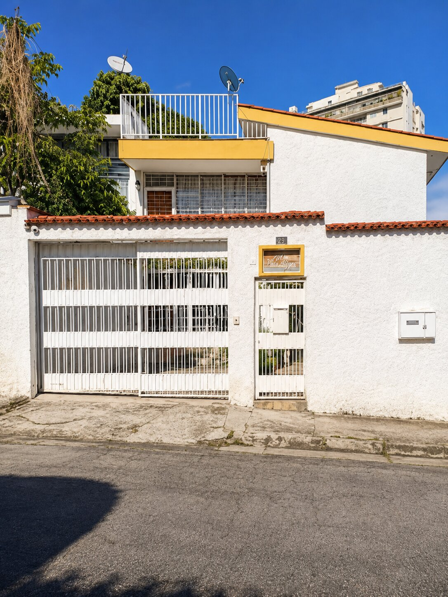
El Marqués
40 m² con agua permanente, calle cerrada y estacionamiento.
Una residencia práctica
Descubre este anexo de 40 m² diseñado para quienes valoran la practicidad y el bienestar. Está ubicado en planta baja, cuenta con entrada independiente y se entrega totalmente amoblado.
Explora la propiedad
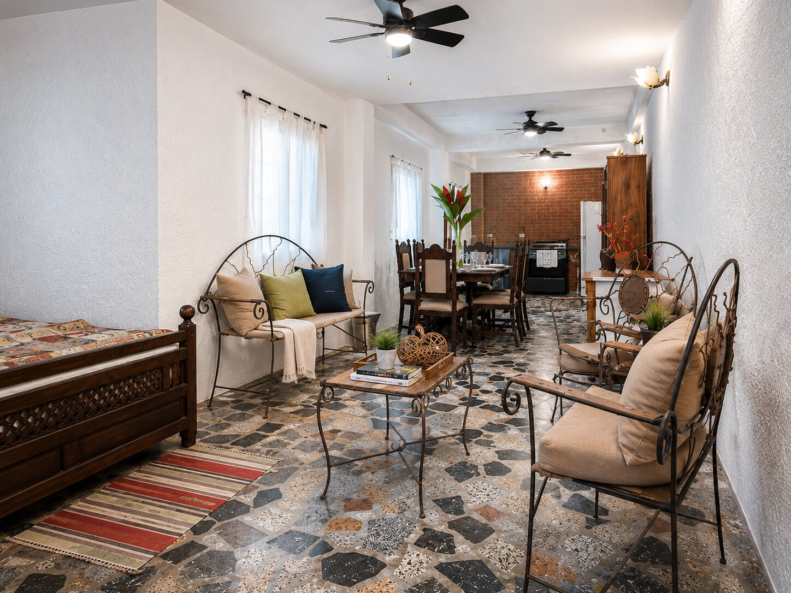
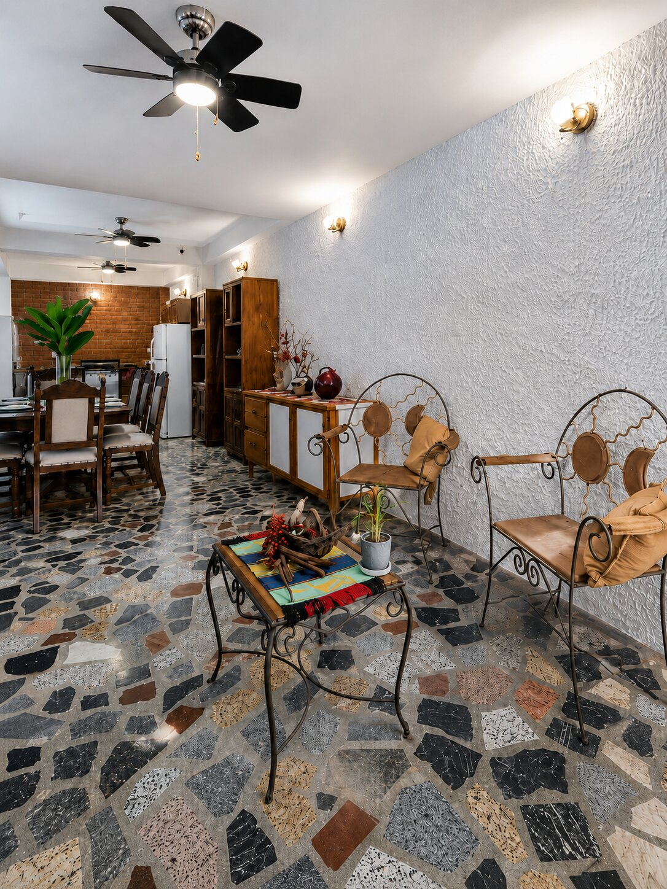
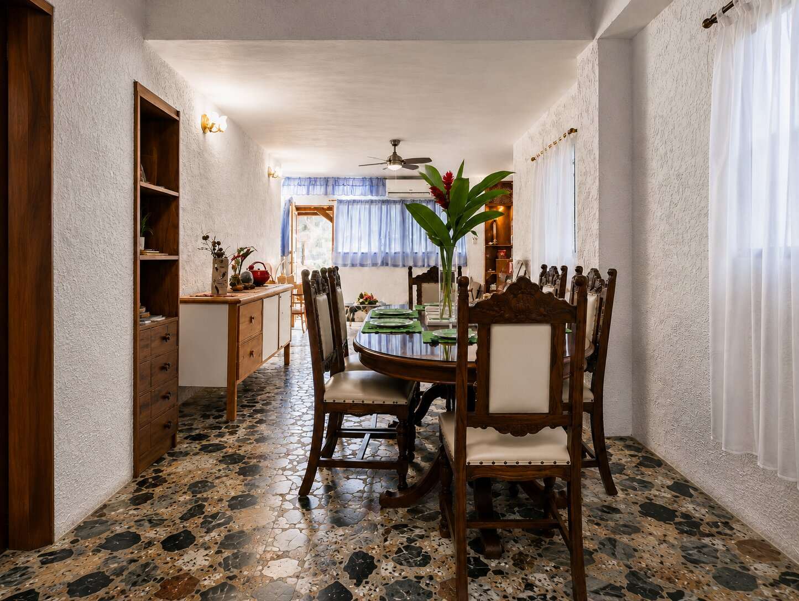
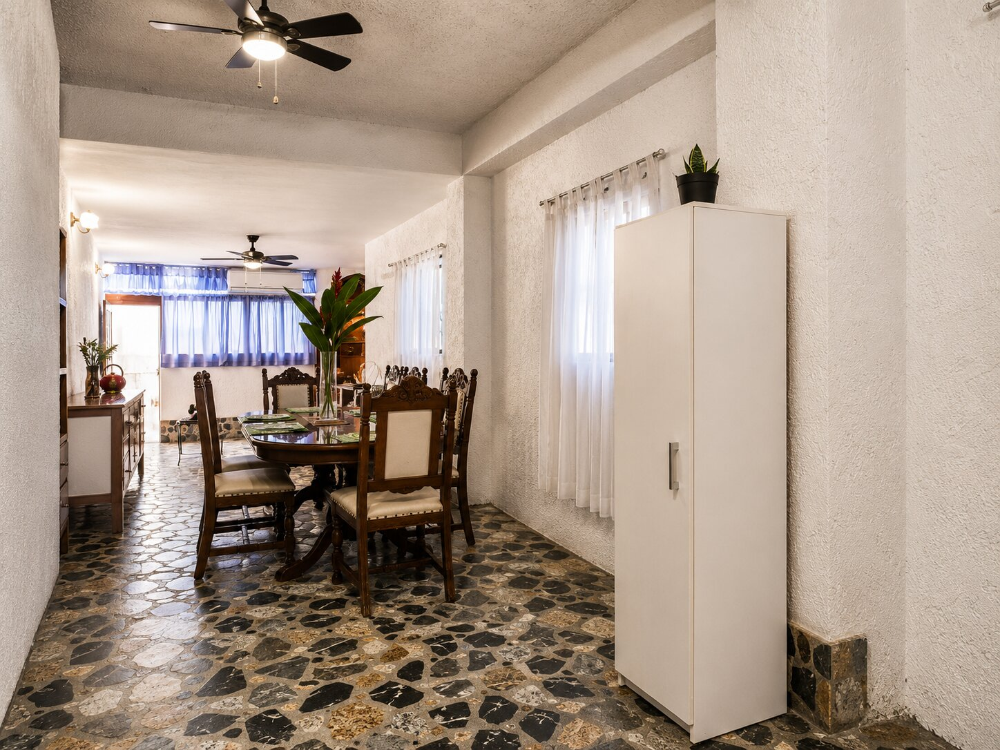
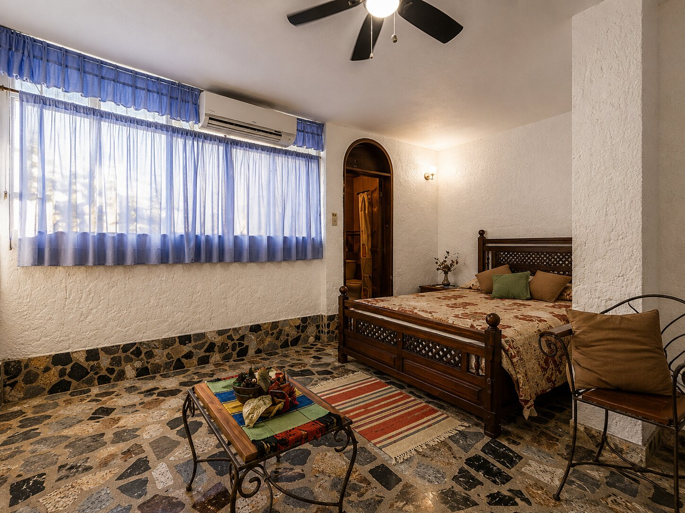
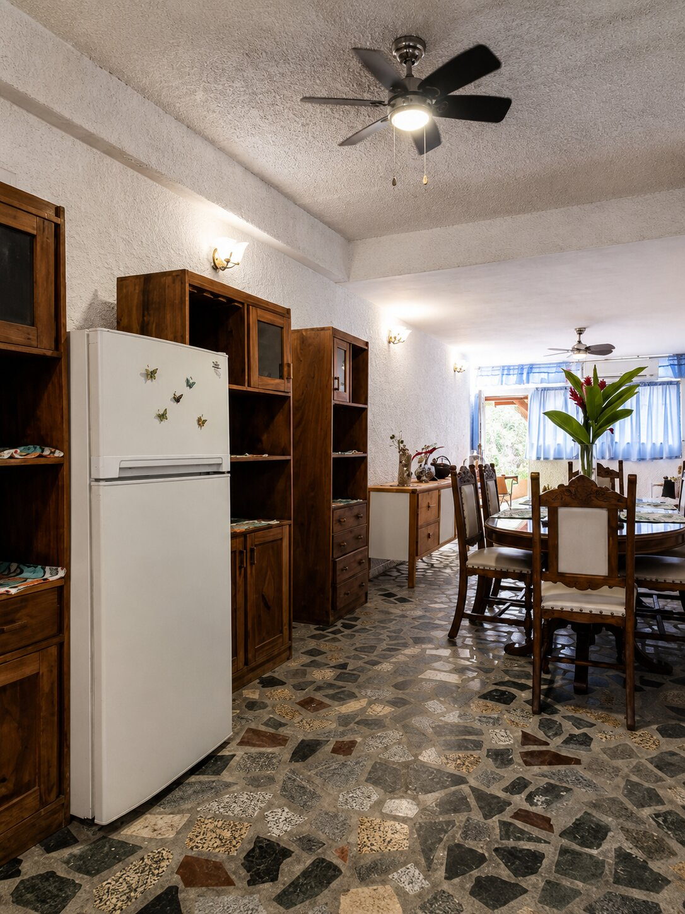
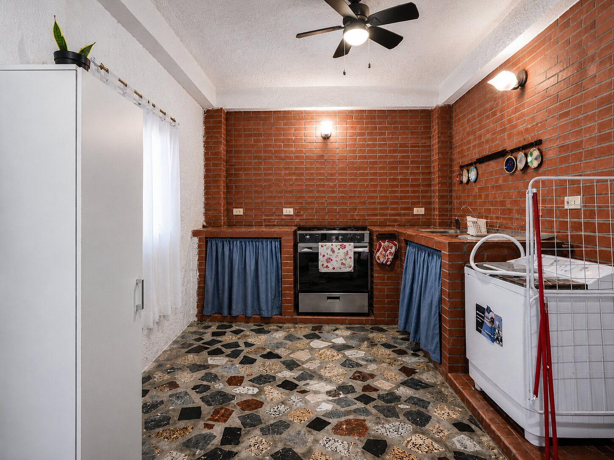
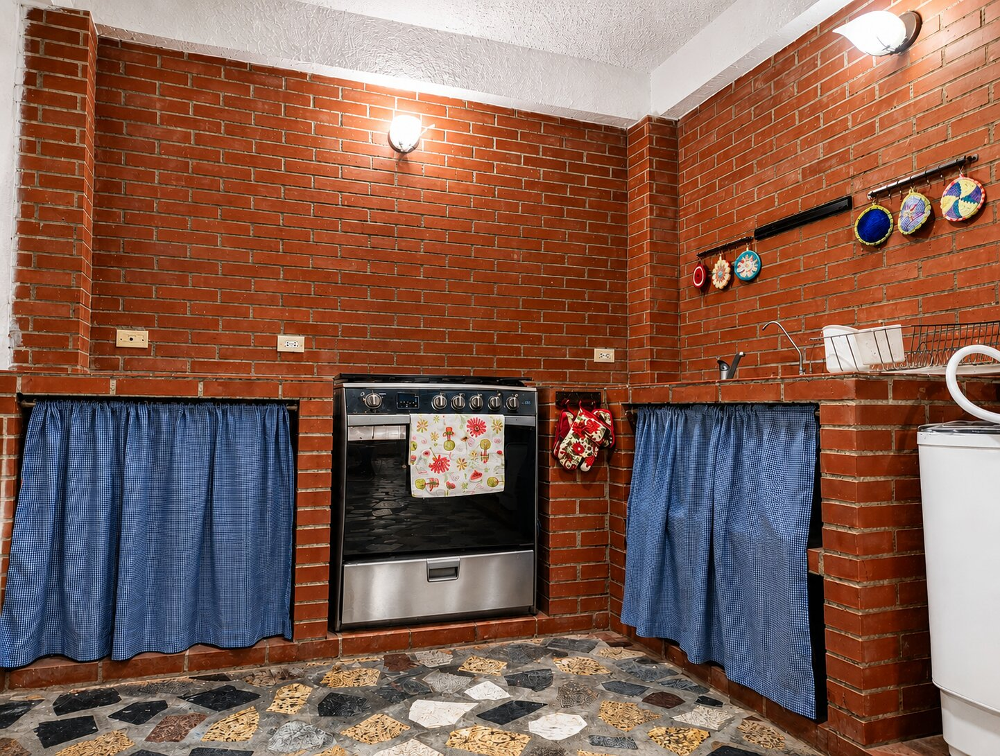
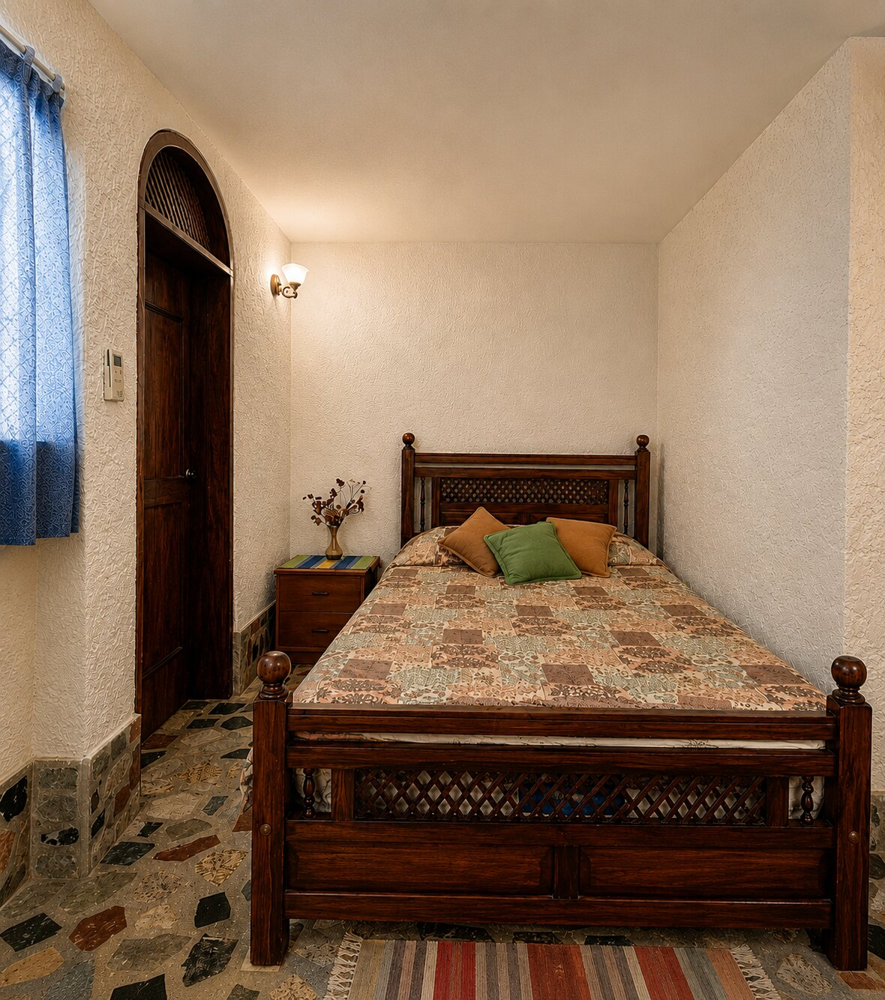
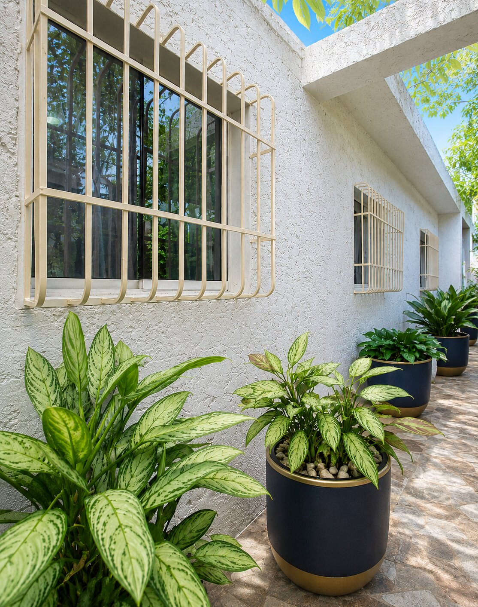
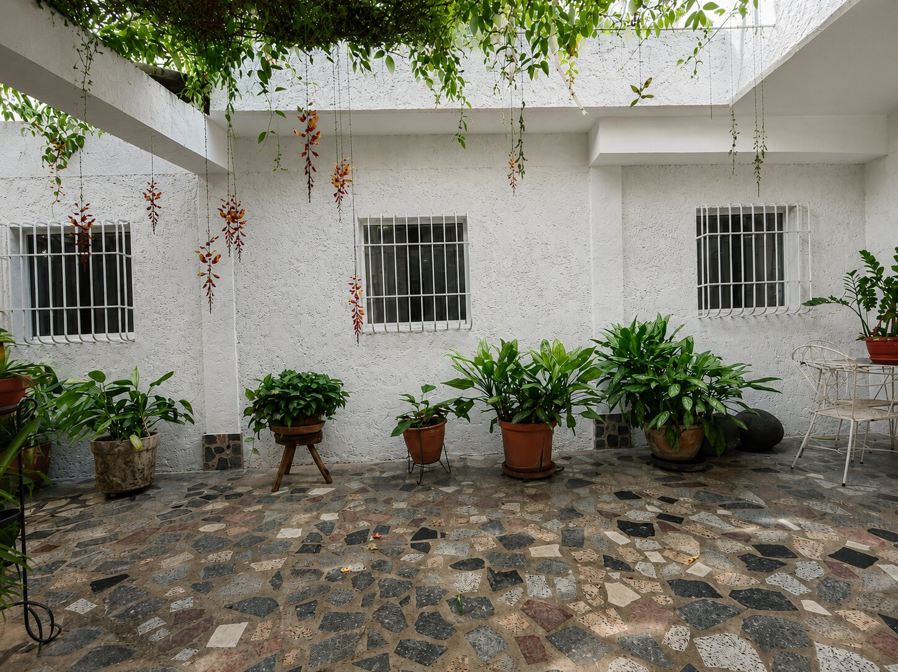
Toca una imagen para verla en detalle · Desliza para explorar
Características
Entrada propia en planta baja para llegar y salir con libertad.
Totalmente amoblado, con sala comedor y cocina integral equipada.
Aire acondicionado, gas directo y agua permanente.
Cerca de centros comerciales, colegios y transporte público.
El espacio
¿Buscas un espacio cómodo, independiente y listo para mudarte en El Marqués? Este anexo combina sala comedor, cocina integral equipada y aire acondicionado para una rutina práctica.
La calle cerrada, el agua permanente, el gas directo y la entrada independiente completan una propuesta pensada para tu bienestar.
Diferenciales
Planta baja y entrada independiente para una experiencia residencial cómoda.
Amoblado y equipado con sala comedor, cocina integral y aire acondicionado.
Agua permanente y gas directo para acompañar tu día a día.
Cerca de comercios, colegios y transporte público.
Canon mensual
USD 500
Anexo amoblado en El Marqués.
Ubicación
Excelente ubicación, cerca de centros comerciales, colegios y transporte público.
Condiciones de negociación
No se admiten niños ni mascotas.